企业战略的最高目标是“永不出局”。企业经营活动，一定要产生一种动态趋势，就是让成本越做越低。而企业战略要植入企业的每一个行动中，让每一个行动都是战略行动，都具备战略价值、战略意义，都能够积累品牌资产。2022 年，华与华与葵花药业【股票代码： 002737 】牵手 15 年，期间也经历了三分三合的故事，实际合作时间也有 9 年之久。从 2007 年开始，华与华深入葵花药业企业经营中，提出“小葵花儿童药战略”，确立了“呵护中国儿童健康成长，保障中国儿童用药安全”的企业经营使命，从此风雨同舟。至今，葵花药业从 2 大过亿单品已发展到 11 大过亿品种，年销售额从 8 亿到超 60 亿，实现了 650 %增长；小葵花儿童药品牌形成了 69 个专业儿童药产品组合，成就了中国儿药第一品牌！
华与华方法是超级符号的方法，超级符号的方法是运用人类潜意识的方法。人类的潜意识，就是弗洛伊德理论中说的人类在儿童时期形成的意识。小葵花儿童药品牌更是把弗洛伊德理论发挥到了极致，你将会在本次案例中看到。
不过我们整个案例，还是要向大家真正展现一个宏大的战略格局。而所谓格局，就是企业战略=企业社会责任战略，企业经营的本质是为社会承担解决某一方面社会问题的责任。企业战略不是企业的战略，而是企业为解决这一社会问题制定的战略，这就是格局！本期文章，我们将为您分享小葵花项目的三大板块：一、提出小葵花儿童药战略，开辟小葵花百亿事业价值版图1 、明确小葵花儿童药战略是“解决中国儿童用药安全”的社会责任战略（ 2007 年）2 、规划品牌战略围棋模型，构建结构化的品牌版图（ 2008 年）：


· 2010 年推出儿童退烧药产品，弥补小葵花儿童咳嗽感冒品类空缺；· 2010 年推出儿童消化系统用药，拉出小葵花儿童消化系统品类银边；· 2011 年推出儿童生长关键期用药，补充儿童维生素补充剂领域产品；· 2011 - 2013 年以剂型零食化，诉求功能化，规划儿童维生素及矿物质品类；· 2013 年做透儿童呼吸系统专用药，涵盖各年龄段，实现从品种到剂型遥遥领先；· 2013 - 2014 年锁定两大西药感冒药品种，创意超级符号“ 7 ”，一“ 7 ”两吃；· 2013 年开发小儿感冒颗粒产品，让 1 岁内婴儿也可以用；· 2014 年开发酸氨溴索口服溶液 2 . 5ml ，解决儿童量杯用药不准确问题；· 2016 年举办“第一届儿童安全用药大会”一石激起千层浪，掀起行业变革；· 2018 年推动儿童药品说明书规范，强化小葵花“儿童要用儿童药”权威专家形象。二、小葵花品牌三角形筑基，成就中国儿药第一品牌1 、 2007 年创意小葵花超级符号，中国儿童药第一个超级符号诞生；2 、 2007 年以“小儿肺热咳喘口服液”扎下第一支金角，建立起整个小葵花儿童药家族；3 、 2007 年推出“小葵花妈妈课堂开课啦”第一支广告片，拉开小葵花儿童药序幕。三、小葵花品牌获取流量主权，实现品牌资产与渠道共享1 、 2017 年以小葵花露扎下第二个金角，成功实现品牌资产贴现；2 、 2021 年开发小葵花露超级元媒体，持续积蓄品牌资产流量池；3 、 2021 年开发小葵花露夏日消暑节，营销日历服务药店引流药店；识；5 、小葵花品牌资产与渠道共享，实现品牌与渠道的共生共赢。
阶段 1
提出小葵花儿童药战略，开辟百亿事业价值版图
2007 年，华与华刚开始与葵花药业合作，当时葵花有两大拳头产品葵花胃康灵和葵花护肝片，葵花已连续 3 年在 8 亿徘徊。于是，如何突破生意增长上的瓶颈，是葵花迫在眉睫要解决的问题。当时客户给我们的课题是，如何给葵花找出第三个品？提出“儿童药战略”，明确小葵花经营使命华与华工作法，深入到企业的资源禀赋中去，我们发现葵花药业有 12 个非处方儿童药产品。而“我国没有专业的儿童药”，儿童吃药靠大人手掰。当时在 3500 多个药品制剂中，供儿童专用的剂型仅 60 种， 98 %的药物没有儿童剂型，大量用药都是参照成人药品说明书“小儿酌减”，通常就是掰一半给孩子吃，这种行为存在非常大的安全隐患。一个社会问题，就是一个商业机会。企业战略不是企业的战略，而是解决某一社会问题，为社会制定的战略。企业战略就是企业社会责任战略，企业社会责任不是企业的业务，而是企业的义务。所以， 2007 年在华与华第一个季度提案中，我们就为葵花提出了“儿童药战略”，确立了小葵花“呵护中国儿童健康成长，保障中国儿童用药安全” 的经营使命。
规划小葵花儿童药产品结构，搭建百亿儿童事业领域价值版图企业战略是一套用来解决社会问题的产品和服务，产品战略是企业发展的路线图。包括做哪些产品，每一支产品扮演的战略角色和承担的战略任务，以及推出的战略次序。这个次序，就是华与华围棋模型中说的金角银边草肚皮。
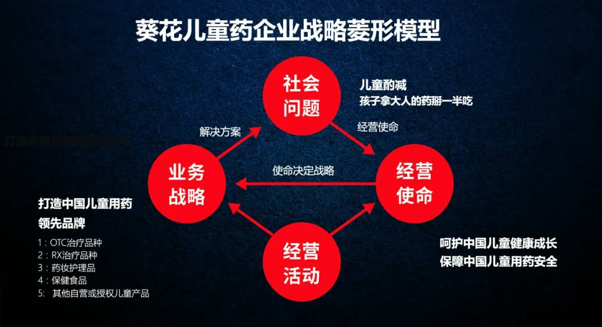
所以从 2007 年开始，葵花药业通过重组及收购其他非处方儿童药，再发展到儿童保健品，再延伸到儿童个人护理用品，通过一个品类一条产品线开始规划葵花儿童药产品结构，最终搭建出了一个百亿的儿童事业领域价值版图。2007 年，小葵花扎下第一支金角产品“小儿肺热咳喘口服液”，通过投入大广告，以品种代品类，建立品牌，带动小葵花呼吸系统品类如小儿化痰止咳颗粒等数十个品种销售。
2008 年 9 月，为了把小葵花儿童药构建为结构化的强势品牌，我们为小葵花提出了儿童药品牌战略围棋模型。首先，通过在解热镇痛、呼吸系统、消化系统、抗感染及儿童营养补充剂等类别的完善，构建小葵花专业儿童药的专业的完整的产品结构。
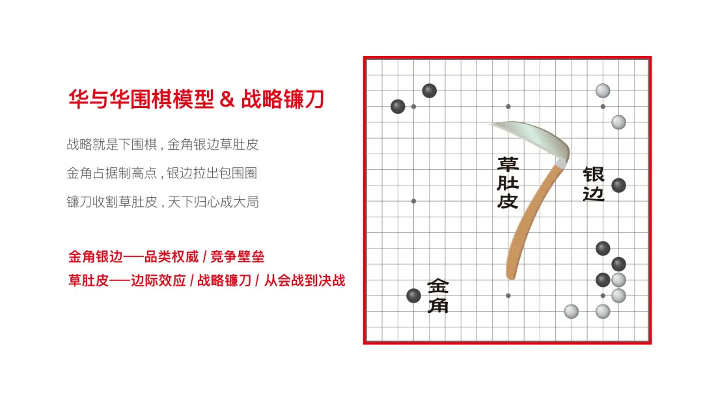
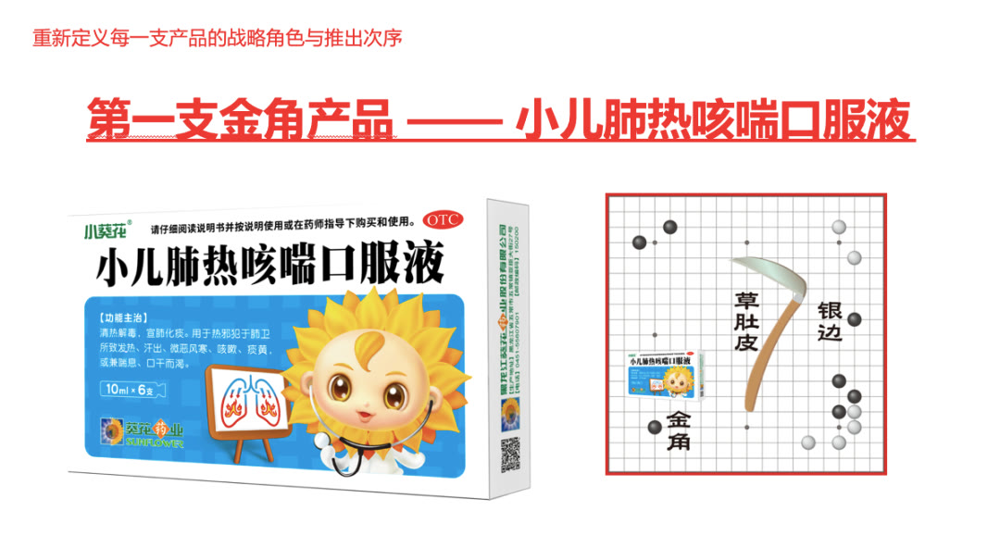
其次，把小葵花打造成为中国最专业的、品种最齐全的、用药最安全，在剂型、服用方便性、安全性、口味最儿童友好的儿童用药，及保健品生产企业。再者，扩充儿童营养补充剂的产品结构，实现利润的最大化。最后通过拳头产品来打造品牌版图，带动整个产品线的销售。这就有了小葵花儿童药家族最早的雏形。
品牌解决该社会问题的完整承诺，解决方案越完整，则社会交易成本越低。解决的社会问题越大，则企业市值越大。2010 年 3 月，小葵花虽然有强势的儿科咳嗽品种，但在整个儿童感冒咳嗽产品结构中，却缺少儿童药“退烧药”的拳头产品，于是小葵花又新增儿童药退烧药产品。今天小葵花儿童药“小儿柴桂退热颗粒”就是小葵花为儿童推出的中药退烧产品，也是葵花11 大过亿品种之一。2010 年 9 月，小葵花从产品结构出发，以小葵花止泻灵糖浆产品锁定儿童消化止泻类最大的“拉肚子”场景，连同健儿消食口服液、小儿麦枣咀嚼片逐步带出小葵花儿童药产品系列银边，构建出清晰的小葵花儿童消化系统品类结构。2011 年 3 月，葵花药业洞察到我国是中度亚临床儿童维生素 A 缺乏国家，家长普遍认为儿童成长关键时期，需要补充关键维生素。我们又相继为小葵花又开发了小儿十维颗粒，作为儿童维生素补充剂领域的产品补充。同年，又进一步完善了维生素及矿物质品类战略，以“剂型零食化，功能诉求化”陆续推出了其他维矿类产品。
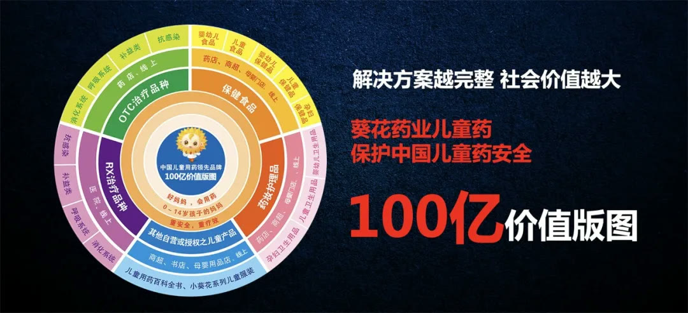
制定企业战略，最有远见的思维方式就是从思考我为社会解决什么问题开始。什么是使命？永远完不成的就是使命，永远完不成，又永远需要人去干的事，就找到了企业永续经营的逻辑。小葵花儿童药战略，虽然带动了整个儿童药行业的竞争，让市场有了更多的儿童药品，但是真正适合儿童的精准儿童解决方案的产品和剂型，还是非常稀缺。2013 年，小葵花再出提出儿童药战略，开发呼吸系统的儿童专用药品，全面涵盖儿童各个年龄段，真正实现从品种到剂型的遥遥领先。于是， 2013 年小葵花推出小儿感冒颗粒，抓住时机让 1 岁内婴儿也可以用。 2014 年 11月，锁定市场最大的两个西药感冒药品种，推出小儿氨酚皖胺颗粒和小儿氨酚黄那敏颗粒。在包装上用超级符号“ 7 ”，强化“缓解 7 大感冒症状”的产品购买理由，一次性统领2 个产品包装，实现一“ 7 ”两吃。2014 年，我们还发现市面上一个最普通的儿童祛痰品种“盐酸氨溴索溶液”却没有适合儿童的剂型，说明书上注明 2 - 5 岁儿童，每次 2 . 5 毫升，一日 3 次。妈妈需要用量杯反复去量，“用量精准”成为妈妈给孩子用药痛点。于是，小葵花又推出了盐酸氨溴索口服溶液 2 . 5ml 规格，后续又开发了 5ml 规格，适合各年龄段儿童使用，解决了妈妈量杯用药不准确的问题。 2017 年，小葵花牌盐酸氨溴索口服液荣获“ 2017 年度中国非处方药产品综合统计排名化学药·止咳化痰类第二名”。
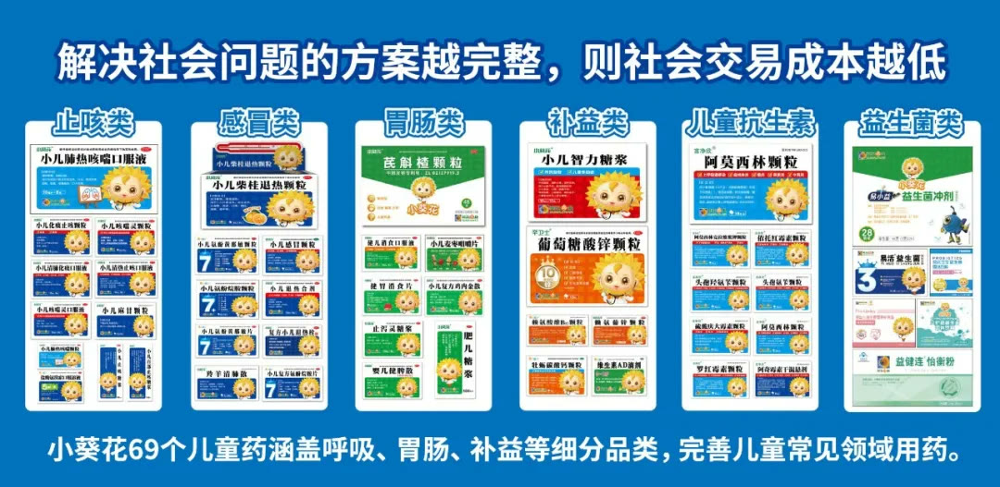
2021 年 11 月底，一则社会新闻“河南郑州母亲为救自己儿子，从海外代购罕见病儿药，涉嫌走私贩卖毒品，被判贩毒不起诉的事件”引起社会广泛关注。诊断难、买药难、用药贵，一直是中国儿童罕见病患者治疗领域的三大障碍。2021 年底葵花药业集团与印度瑞迪博士达成了两款儿童罕见病药战略推广合作，本次引进的“氨己烯酸散”，正是上述“贩毒母亲”孩子所患罕见病的对症药。
“葵花药业总裁关一女士在合作签约仪式上说：
用妈妈心，做儿童药！用妈妈心，引进儿童药！小葵花品牌一直致力于为中国儿
”童健康服务，此次在国内均无销售的两款罕见病儿药的战略引入，将会使儿童罕见病临床稀缺的药品国内购买得以实现，让每个患者都能及时买得到药。
左边为葵花药业总裁关一女士
公关是企业尽社会责任的产品
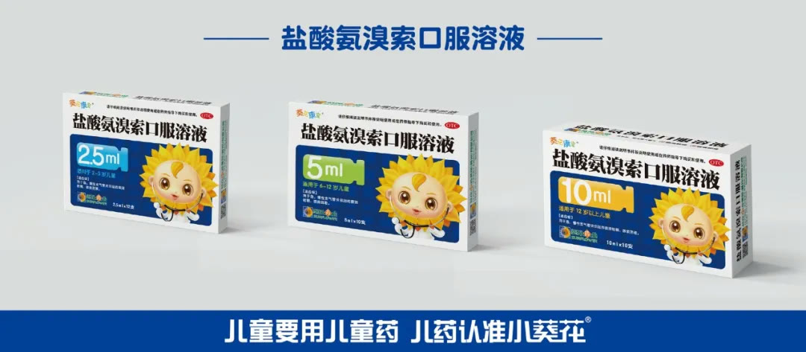
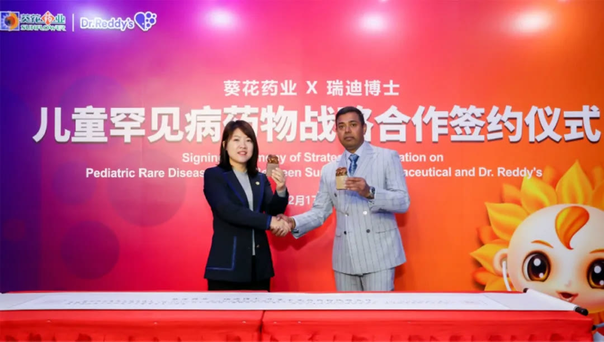
公关是企业尽社会责任的产品，“中国儿童用药安全大会”推动儿童药行业变革。2014 年，华与华继续向小葵花提出了开发战略公关产品，举办中国儿童用药安全大会，来推动儿童专用药物的发展，促进行业及全社会对儿童用药安全问题的关注，推动先进合理的儿童用药监管和包装、广告法规的制定和发展。
华与华为小葵花设计的“儿童要用儿童药”标识，作为大会上倡导儿童安全用药的标识被广泛传播，它既是企业公关产品符号也是中国儿童安全用药的社会公益符号，这就是企业战略和企业社会责任战略的重合和链接。正如，商业动机不是被掩饰而是被放大，与人类时代的宏大叙事相结合。2018 年，为继续强化小葵花“儿童要用儿童药”权威专家形象，我们更新了小葵花儿童药品说明书规范。如今，小葵花现有 69 个儿童药产品，专为儿童研发，精准用法用量，适用于各年龄段儿童，形成了一套完整的儿童安全用药解决方案。每一种儿童药都配有说明书，并通过表格对应儿童体重与精准用法用量。
小葵花儿童药战略，是为解决中国儿童用药安全而制定的社会责任战略。小葵花品牌在“呵护中国儿童健康成长，保障中国儿童用药安全”的使命下砥砺前行，“儿童药战略”成为葵花药业集团第一战略，是企业不可撼动的最高纲领！
阶段 2
小葵花品牌三角形筑基，成就中国儿药第一品牌
提出小葵花儿童药战略后，又如何建立小葵花品牌三角形的呢？华与华品牌三角形，即“符号系统”、“话语体系”和“产品结构”。
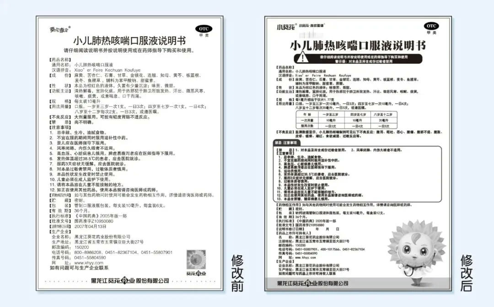
符号系统：每个产品或品牌，都有一个感官上的体验，品牌的感官信号就是它的符号系统。产品结构：不管做一个什么样的品牌，首先得有产品，产品是品牌的本源。话语体系：有产品就一定会有产品命名、产品定义，这就是品牌话语体系，是品牌文本传达。小葵花娃娃，中国儿童药第一个超级符号诞生一个品牌就是一个超级符号系统。超级符号是蕴藏在人类文化里的“原力” 能够让一个新品牌在一夜之间成为亿万消费者的老朋友。2007 年的时候，葵花也有个草药娃娃的形象在包装上，但草药娃娃一定成不了。因为它没有母体，人的文化意识里没有草药娃娃这个概念，也就是说草药娃娃它没有流量母体。于是，我们决定重新设计，换成了葵花娃娃。
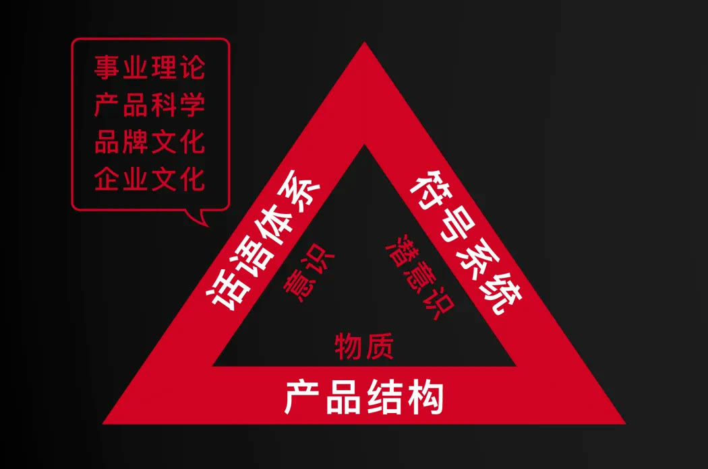
卡通形象成本的本质要有“文化原型”。从草药娃娃到葵花娃娃，就是寻找母体、回到母体的过程，让品牌拥有了一个强有力的“超级符号代言人”，代表葵花儿童药品牌。华与华创意的十二字方针：一目了然，一见如故，不胫而走。葵花娃娃的文化原型，来自小孩子百日照的时候， 妈妈都会给它拍一张用葵花环绕小孩子头的照片。我们将小葵花形象，寄生在儿童百日照葵花宝宝的文化母体中，并将其进行私有化改造。这是全世界人民都熟悉的，都喜爱的葵花娃娃形象。
同时，我们赋予小葵花专业权威的儿童安全用药知识官的角色定位，亲和友善，懂得和孩子沟通，擅长传播儿童用药知识。小葵花形象就是儿童安全用药权威知识官的梦想化身。自 2007 年华与华创意小葵花超级符号之后，我们用它统一了所有包装，让小葵花形象成为了品牌的重要资产，并持续投资，持续生养。如今小葵花形象已成功统领了小葵花儿童药事业领域，是是小葵花最重要的品牌资产。小儿肺热咳喘口服液扎下第一支金角，来建立起整个儿童药产品家族为什么选择小葵花“小儿肺热咳喘口服液” 作为第一支金角产品呢？
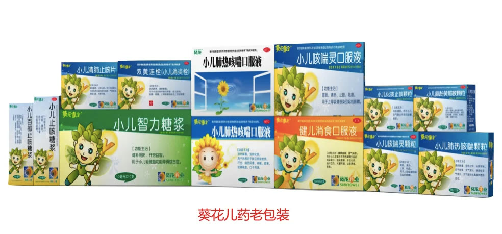
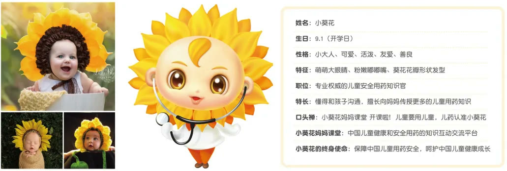
“小儿肺热咳喘口服液”是非处方药可以投入广告，“小儿肺热咳喘口服液”品种也是小葵花儿童药的独家剂型，其任务就是建立品牌。小葵花通过投入大广告，以品种代品类，以金角产品先占据咳嗽品类制高点，再依次推出其他咳嗽品类产品，然后再推出整个儿童用药和健康护理等产品，逐步就建立起小葵花儿童药产品结构，建立小葵花儿童药品牌整个产品家族。
所以投资小葵花妈妈课堂开课啦，就是投资和建立一个广告品牌和创意模型——“小葵花妈妈课堂”，搭起了小葵花儿童药品牌传播的基础和框架。我们对小葵花妈妈课堂话语的持续投资，就是话语权力的建立，就是建立企业的战略优势。
企业是经营知识的机构，“小葵花妈妈课堂”平台也是输送专业儿童用药及儿童健康资讯知识的平台品牌。2007 年开始，华与华推出的“小葵花妈妈课堂”系列传播内容，几乎每个广告都以“小葵花妈妈课堂开课啦”开头，并且持续为消费者不断输送儿童用药知识，让消费者养成对我们资讯的习惯性依赖，将“小葵花妈妈课堂”经营为儿童安全用药及健康咨询的平台品牌，持续为品牌创造知识财富。如今，华与华打造的小葵花形象已深入人心，成为历史上创造的“国民级超级符号”，统领了小葵花儿童药百亿事业领域版图。华与华创作的 “小葵花妈妈课堂开课啦”，成为小葵花重要的品牌资产，在中国儿童药历史上留下了浓墨重彩的一笔，可以毫不怀疑的说这句话“管用 100 年”！小葵花小儿肺热咳喘口服液，代表小葵花儿童药品牌，发展出 69 个小葵花儿童药产品以及上百个儿童大健康产品，小葵花真正做到了只要“贴上小葵花形象，包装就能卖货”，实现了“品牌边际效益的最大化”。华与华为葵花服务的第一年，就完成了葵花儿童药战略及品牌三角形的所有规划。但是构建品牌资产的过程，不是一年，也不是十五年的事情，而是品牌终身的事业。15 年期间，华与华为小葵花药业构建了丰富的品牌符号、话语和产品体系。
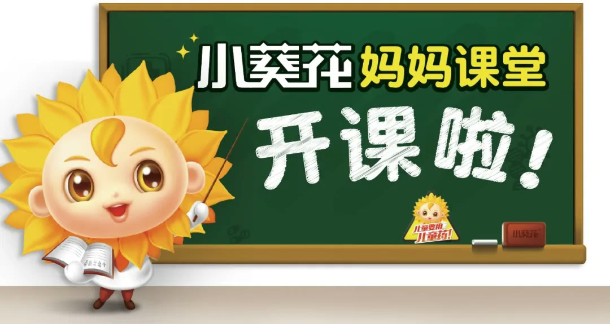
15 年形成了五大儿童药系列， 69 个儿童药品种，上百个大健康产品，积累出“小葵花娃娃”超级符号形象，以及“小葵花妈妈课堂开课啦”、“孩子咳嗽老不好，多半是肺热”、“儿童要用儿童药”等一系列脍炙人口的话语体系，成为小葵花重要的品牌资产。
阶段 3
小葵花品牌资产获取流量主权，实现品牌资产与渠道共享
什么叫品牌资产？品牌资产就是能给我们带来效益的消费者的品牌认知。在品牌资产原理里，花的钱不仅要少，而且不是花掉之后就花掉了，而是让广告变成储钱罐，还要能作为资产攒下来， 50 年后我们还能从中获取利息。也就是说每年我们做品牌营销的花费，都能变成资产，以后我可以用新的产品套上这个品牌，去把我存在那里的品牌资产再贴现出来。小葵花露扎下第二个金角产品，成功实现品牌资产贴现2017 年，我们发现“小葵花露金银花露”虽然是 OTC 非处方药品，但实际上是防止小孩子中暑的饮品，具有巨大的市场空间，就像儿童的加多宝，当时要把这个品做起来，还是非常难的，可以说是一场豪赌。但是，企业通过十年对小葵花品牌资产的经营和广告费用的投入，让消费者能够点购小葵花，顺着小葵花来找货架上的儿童药。所以，当时我们投资的广告费用，并不是流掉了，而是让广告变成储钱罐，存在小葵花的品牌资产银行里，又通过小葵花露产品再贴现出来，并且更重要的是成功让“小葵花露”实现了品牌溢价。

而且，小葵花露是夏日饮品，夏天药店的生意相对来说是淡季，我们有小葵花露提供给药店，补充药店夏天的生意，还可以给药店带来增量。渠道是用资源投票的，越适配渠道支持的力度越大。因此，小葵花露上市的前 2 年就做到了 330 %的增长，迅速破亿，成为小葵花的又一大过亿大单品。如果没有小葵花前 10 年的品牌资产的规划的话，就不可能有这样的投资回报效率。
小葵花露开发超级元媒体，持续积蓄品牌资产流量池2022 年连锁药店都在谈论“流量”，大家都在讨论宏观经济大背景下“流量”从哪里来？我们说“流量就在你自己身上”，用好自己身上的流量，将每一次流量销售转换，都变成一次品牌资产的再积累，从而实现品牌的流量循环。首先，产品元媒体是不花钱就可以使用的媒体。商品来到世间，它的每一个毛孔都流着流量的血液。所以我们在做“小葵花露”包装的过程，就是在最大限度开发包装的媒体功能和销售功能，做到机关算尽。为了增强小葵露产品包装的信号能量，让产品自己会说话，我们设计了新包装的 5 大机关：机关 1 ：放大小葵花娃娃，增强超级符号吸引力，将功能图标化，突出宝宝适应症。机关 2 ：放大产品名“小葵花露，创造货架优势。机关 3 ：绿色条凸显产品名“小葵花露”，增强产品消暑的食欲感。机关 4 ：瓶型微调，更立体。机关 5 ：正反面都是“小葵花露”“金银花露”最大化货架陈列优势。
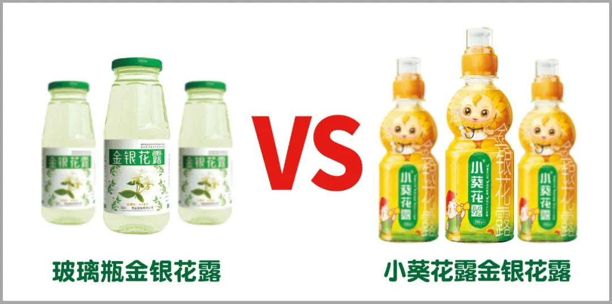
我们还为小葵花露设计了超级元媒体割箱，把运输包装变成产品广告媒体。运输包装是企业最容易忽视的“不花钱的传播载体”。我们让原本被废弃的运输箱，也能在寸土寸金的药店变废为宝，发挥“占领销售阵地”的战略价值。让割箱能揽客，让割箱能卖货！
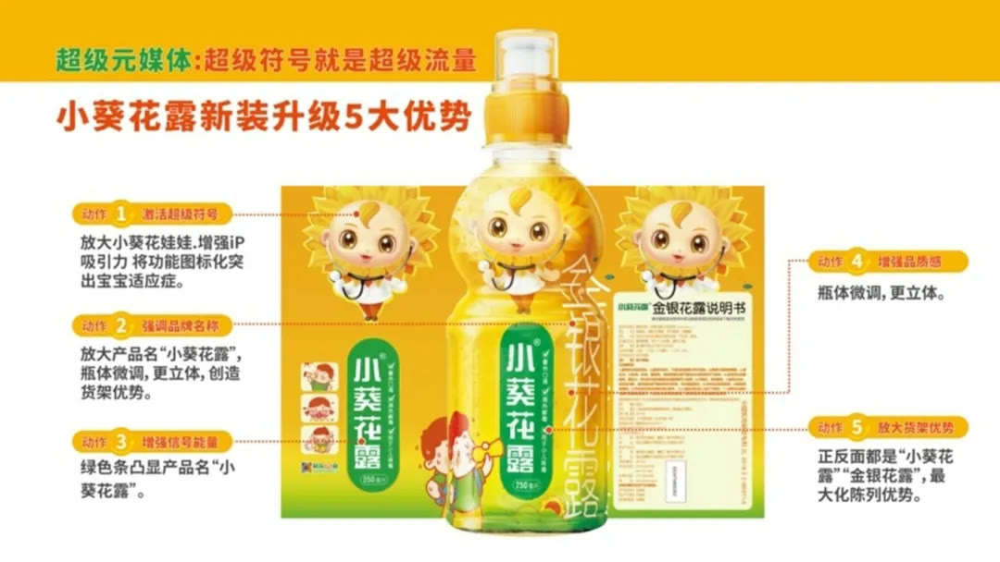
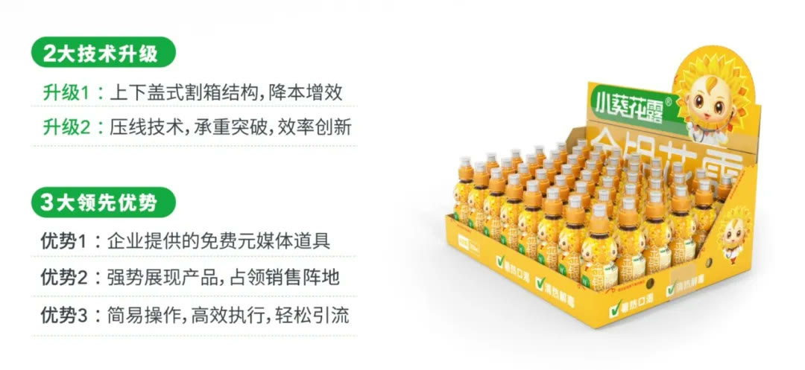
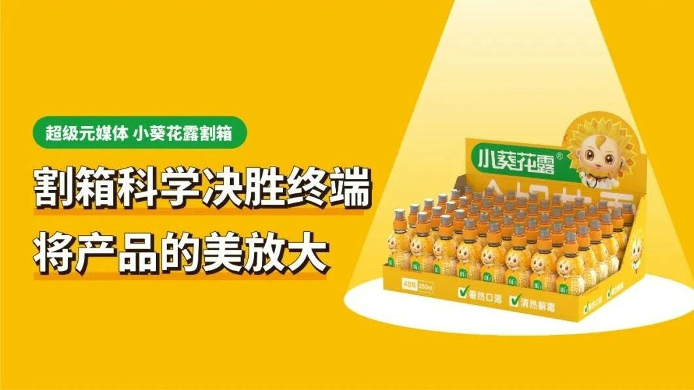
小葵花露夏日消暑节，营销日历服务药店引流药店每年 6 - 8 月正值夏天药店的淡季，这个时候我们在药店规划“小葵花露消暑节”， 通过在药店开展“小葵花露免费试饮活动”吸引家长和孩子，为药店带来新的客流，同时拉动小葵花露产品的销售增长。并且，为了能够让葵花销售队伍将营销日历的关键动作进行标准化复制，华与华为小葵花市场部编写《小葵花露万店陈列终端标准化执行规范手册》、《小葵花露试饮活动终端标准化执行规范手册》，来推动小葵花露终端万店陈列和试饮活动标准化规范执行落地，引爆小葵花露夏季动销热潮。今年夏天您一定听过一首醒脑歌曲“孩子怕上火喝什么，小葵花露呀小葵花露”。全国各大小区药店门口，经常可以听到，三岁孩子一天唱到晚。华与华方法就是三个人的方法：弗洛伊德潜意识方法、荣格集体潜意识方法、巴甫洛夫刺激反射方法。
华与华创意的广告叫做“醒脑广告”，而不是“洗脑广告”。洗脑广告狂轰滥炸，满地打滚，硬往消费者的大脑里闯。华与华的醒脑广告则是“卷入”，是唤醒大众的集体潜意识和大众美好情绪，自己就能传诵。2022 小葵花露营销开战，率先登陆金鹰卡通频道，全天高频滚动人群饱和轰炸。同时期，小葵花露与新潮梯媒全国战略合作重点启动，覆盖 2 亿亲子家庭。“孩子怕上火喝什么，小葵花露呀小葵花露！”就是今年华与华团队在“小葵花品牌银行”里，投资的一笔品牌资产，这将是小葵花品牌又一个重要的战略“品牌资产”。所以，通过遵循建立品牌资产理论的方法，我们能不断地把过去的花费都变成投资；也能把每一次投资的品牌资产零存整取，再把它贴现出来。从而不仅在终端建立小葵花品牌的流量主权，也能实现小葵花品牌资产流量再循环。品牌资产是时间的朋友。以品牌资产观经营品牌，不是看一时的效果，只有一以贯之，只问耕耘，不问收获，效果自然而来。小葵花品牌资产与渠道共享，实现品牌与渠道的共生共赢企业竞争的目的不是为了打败对手，而是获得利润。我们怎么跟其他制药企业竞争，这是最不重要的，重要的是上下游。你要获得利润，就要有对上游的议价能力和对下游的议价能力。对于小葵花来说，我们所处的 “牌桌”，就是迈克尔波特的五力模型。
通过迈克尔·波特竞争五力模型分析洞察到，小葵花的下游药店渠道的市场环境发生了巨大变化：1 ）药店高度连锁化 55 . 3 %，连锁药店集中度越来越高，议价力加强；
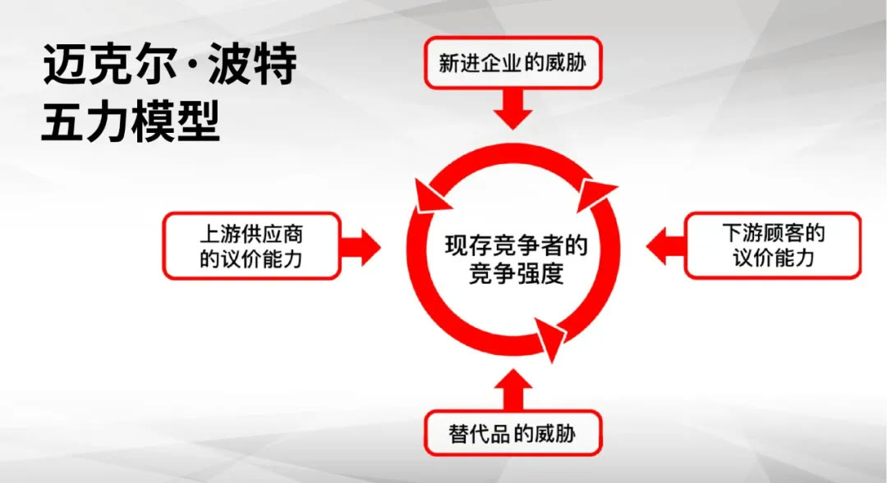
2 ）药店受线上 O2O 影响，门店的人流量越来越低；3 ）竞争本质是赢利，药店圈地后，线下药店竞争日趋激烈，存在高度同质化。连锁药店药生存也有利益诉求，也有发展需要。所以连锁药店与制药品牌之间始终存在“利益冲突”，始终处于一种“博弈”状态。从中国制药企业这 20 年的历程来看，制药企业与连锁药店的“博弈”关系已发生了深刻的变化。以前的连锁药店都是夫妻老婆店。制药企业打广告，下游药店就跟着走，定价权全在制药企业。随连锁药店的市场集中度提高，规模越来越大，连锁药店对制药企业的议价能力越来越强，制药企业对连锁药店的议价能力就弱了，被连锁药店卡住了脖子。这就意味着药企在跟药店的谈判中，一个品能不能在药店卖、能不能卖的好，药店有很大的话语权。例如，在药店可能会被放在很不起眼的位置，顾客可能找不到，找到了店员还会“拦截“，推更高利润的药。所以，过去很多广告打的响的品牌都消失了。究其原因，就是这些品牌在早期的时候，既没有从企业战略上找到自己的位置，也没有投资自己的品牌资产建立自己的流量主权，也就没有在消费者端和渠道端获取品牌的议价能力，步步把自己的命运交给了药店渠道。潮水退去，谁在裸泳就一目了然了。但我们葵花，还能在连锁药店里持续经营，没有被连锁药店卡住脖子，原因在于哪里？葵花改变传统与连锁药店的利益博弈关系，把与渠道的组织关系变成了合作，深入到药店经营中去，与药店建立深度的绑定关系。合作才是解决冲突的最好形式。渠道是什么？渠道是企业“体制外，结构内”的组织共同体，相互依存，共同发展的组织统一体。渠道是一个组织行为学：1 ）有资源禀赋；2 ）有价值贡献；3 ）有利益诉求；4 ）有发展需要。小葵花是如何做到的呢？第一，小葵花儿童药拥有 69 个儿童药，具有丰富的儿童药品类及品种，建立起了品牌竞争壁垒，掌握一定的渠道主动权。这就是说如果有一个人在药店点名小葵花小儿肺热咳喘口服液，由于这个品种的毛利低，店员不愿意推。但是，因为小葵花的药品全，有知名度，店员会推荐小葵花小儿化痰止咳颗粒，小儿氨酚黄那敏颗粒等。
第二，小葵花露扎下第二个金角产品，即是品牌资产，也是适配渠道的流量产品。夏天药店的生意相对来说是淡季，而我们也有小葵花露提供给药店，补充药店夏天的生意，这也可以给药店带来增量。第三，小葵花为渠道开发营销节日，全面媒体化工程改善门店视觉营销系统，服务药店，引流药店。我们用华与华持续改善方法设计的门店视觉营销系统，让我们的每一个动作，每一个产品，每一样物料，都能互为产品，互为广告，互为流量入口。最终，华与华成功助力小葵花品牌实现流量再循环，实现小葵花品牌资产与渠道共享，实现品牌与渠道的共生共赢。2021 西普会小葵花的主场活动就是西普会的高潮！药店老板来的比主会场还齐，而且从头参加到尾！
案例总结
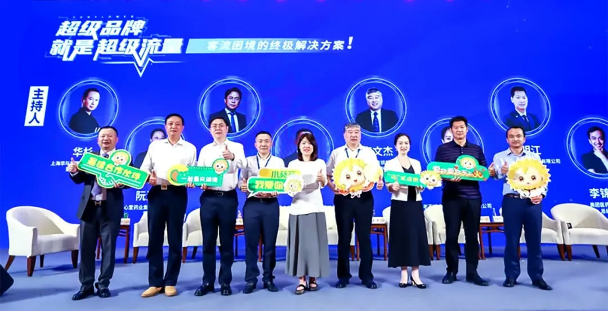
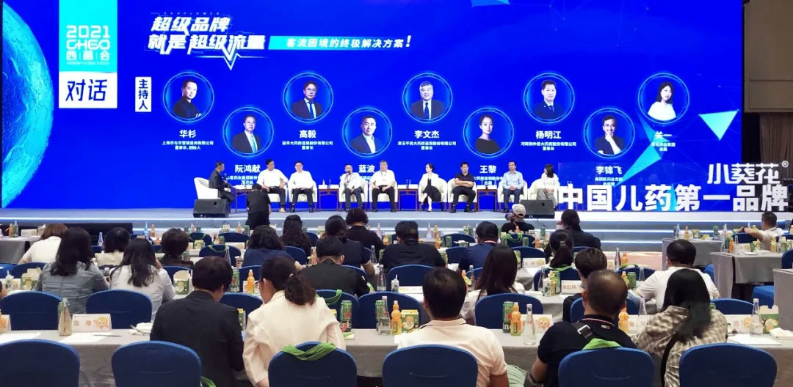
华与华陪伴了葵花药业 15 年，小葵花儿童药品牌的成功，归功于企业战略定位的成功，也归功于企业品牌资产持续经营理念的成功，更重要的是合作过程中葵花药业英明决策的成功，没有决策也就没有今天这里的一切。而小葵花儿童药品牌案例就是“华与华方法标准化”的标杆案例。华与华方法就是一套让企业少走弯路的经营哲学、企业战略、营销传播的方法，通过超级符号理论和战略、营销、品牌三位一体的解决方案（所有的事都是一件事），以至诚至善、凡事彻底的工作态度，帮助客户成为所在行业基业常青的领导品牌！